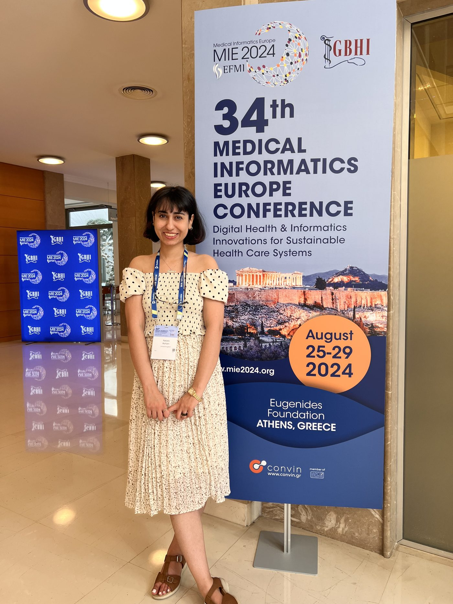

HEA Associate Fellowship
Recognised as an Associate Fellow of the Higher Education Academy (HEA / Advance HE), reflecting a sustained interest in effective teaching practice in bioinformatics and health data science.
TEACHING
My interest in teaching grew out of research on how people learn computational and health data science - and continues as an Associate Fellow of the Higher Education Academy.

LEARNING & EDUCATION
My teaching and education research focuses on how learners build understanding in health data science, AI, and computational medicine.
Recognised as an Associate Fellow of the Higher Education Academy (HEA / Advance HE), reflecting a sustained interest in effective teaching practice in bioinformatics and health data science.
PhD research at the University of Edinburgh used AI and educational data mining to study how students learn precision medicine and health informatics concepts, including work on early prediction of student performance and self-reported learning strategies.
Supporting students and colleagues working at the interface of computer science and biology - from getting started with bioinformatics tooling to designing analyses for genomic data.